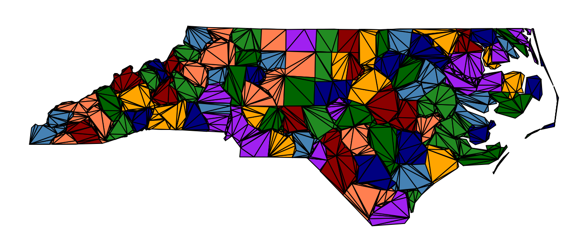

The simple features standard has three surface types beyond POLYGON and MULTIPOLYGON: TRIANGLE, TIN (a triangulated irregular network) and POLYHEDRALSURFACE. They have been in the standard all along, but few R tools produced them. That is changing. SFCGAL bindings return a TIN from triangulation and a TRIANGLE from some overlays, and sf now carries all three through tibbles and dplyr (sf#2632).
This article is exploratory. It shows how these types map onto a vertex pool, round-trips them, and sets out what each representation is good for. It needs a wk that can read the three types (wk#236); with an older wk the code is shown but not run.
Three ways to hold the same triangles
A TIN in simple features is a list of triangles, and each triangle is a closed polygon ring of four coordinates. Nothing is shared: a corner used by six triangles is stored six times (and once more to close each ring), and which triangles are neighbours has to be found again by matching coordinates.
A wkpool holds segments, each a pair of ids into a vertex table. A
wkpool_tri holds triangles, each a triple of ids into the
same kind of vertex table. After merge_coincident() a
shared corner is one row of the vertex table, and neighbours share
ids.
| sfc TIN | wkpool | wkpool_tri | |
|---|---|---|---|
| Element | one feature: a list of closed triangle rings | one directed segment | one triangle |
| Coordinates | 4 per triangle, repeated at every shared corner | vertex table, referenced by id | vertex table, referenced by id |
| Neighbours | found by matching coordinates | shared vertex ids; find_shared_edges()
|
shared vertex ids; tri_segments()
|
| Grouping | the feature is the TIN |
.feature, .path (part, ring) |
.feature, .part
|
| Type name | TIN, TRIANGLE, POLYHEDRALSURFACE carry meaning | none: everything is segments | triangles only |
| Orientation | not constrained | ring direction kept | counter-clockwise from pool_triangulate()
|
| z | per coordinate | a vertex column | a vertex column |
| Exchange | WKB, WKT, GeoPackage, any GIS | wk-handleable as LINESTRINGs | wk-handleable as POLYGONs |
The trade-offs, briefly:
- sfc TIN. Self-contained per feature and readable by any GIS, so it is the right form for exchange and for a feature table. It is also the most redundant, carries no topology, and adds three geometry types that most code does not expect.
- wkpool. Takes any geometry and records where each segment came from, so it is the general tool for finding shared edges, arcs and cycles. It has no notion of a face, so a triangle is three segments that happen to close.
- wkpool_tri. The compact mesh form: faces, shared vertices and adjacency in a few integer columns, and it plots in one call. It is experimental, holds triangles only (a polyhedral surface must be triangulated first), and the type name is lost on the way out through wk.
A TIN into a pool
Two TIN features, the first with two triangles and the second with one, all sharing corners:
tin <- sf::st_as_sfc(c(
"TIN Z (((0 0 0, 2 0 1, 0 2 1, 0 0 0)), ((2 0 1, 2 2 2, 0 2 1, 2 0 1)))",
"TIN Z (((2 0 1, 4 0 0, 2 2 2, 2 0 1)))"
))
pool <- establish_topology(tin)
pool
#> <wkpool[9 segments, 12 vertices] CRS=NA>
#> [1] <segment: 1->2> <segment: 2->3> <segment: 3->4> <segment: 5->6>
#> [5] <segment: 6->7> <segment: 7->8> <segment: 9->10> <segment: 10->11>
#> [9] <segment: 11->12>
pool_paths(pool)
#> .path .feature .part .ring
#> 1 1 1 2 1
#> 2 2 1 3 2
#> 3 3 2 5 3wk reads a TIN as a MULTIPOLYGON, so each triangle arrives as a ring of three segments, with its own path. Nine segments and twelve vertices so far; after merging, the twelve corners are five vertices, and the edge between the two features shows up as shared:
merged <- merge_coincident(pool)
nrow(pool_vertices(merged))
#> [1] 5
find_shared_edges(merged)
#> edge_key .vx0 .vx1 .feature segment_idx features
#> 4 2-4 2 4 1 4 1, 2
#> 9 2-4 2 4 2 9 1, 2To get triangles rather than segments, take the first vertex of each of the three segments on every path. This helper is not part of the package (yet):
rings_to_tri <- function(pool) {
s <- pool_segments(pool)
stopifnot(all(tabulate(s$.path)[unique(s$.path)] == 3L))
i <- which(!duplicated(s$.path))
new_wkpool_tri(pool_vertices(pool),
s$.vx0[i], s$.vx0[i + 1L], s$.vx0[i + 2L],
feature = s$.feature[i], crs = wk::wk_crs(pool))
}
tri <- rings_to_tri(pool)
pool_triangles(tri)
#> .vx0 .vx1 .vx2 .feature
#> 1 1 2 3 1
#> 2 5 6 7 1
#> 3 9 10 11 2And back out
wk sees a wkpool_tri as one POLYGON per triangle, which
every wk consumer can take. To get a TIN back, group the triangles by
feature and write each one as a TRIANGLE inside a TIN, the way sf stores
it. Again a helper, not package code:
tri_to_tin <- function(tri) {
v <- pool_vertices(tri)
t <- pool_triangles(tri)
has_z <- "z" %in% names(v)
xyz <- if (has_z) cbind(v$x, v$y, v$z) else cbind(v$x, v$y)
dim <- if (has_z) "XYZ" else "XY"
feature <- if (is.null(t$.feature)) rep(1L, nrow(t)) else t$.feature
rows <- split(seq_len(nrow(t)), factor(feature, levels = unique(feature)))
geoms <- lapply(rows, function(r) {
faces <- lapply(r, function(k) {
i <- match(c(t$.vx0[k], t$.vx1[k], t$.vx2[k], t$.vx0[k]), v$.vx)
structure(list(xyz[i, , drop = FALSE]), class = c(dim, "TRIANGLE", "sfg"))
})
structure(faces, class = c(dim, "TIN", "sfg"))
})
sf::st_sfc(unname(geoms), crs = sf::st_crs(wk::wk_crs(tri)))
}The round trip is exact, before and after merging the vertices:
identical(tri_to_tin(tri), tin)
#> [1] TRUE
identical(tri_to_tin(merge_coincident(tri)), tin)
#> [1] TRUEA triangulation out to a GeoPackage and back
Going the other way: triangulate a polygon layer on a pool, write the triangles as a TIN per feature, read the file back, and recover the same mesh. North Carolina’s 100 counties, ear cut with decido:
nc <- sf::st_read(system.file("shape/nc.shp", package = "sf"), quiet = TRUE)
nc_pool <- merge_coincident(establish_topology(sf::st_geometry(nc)))
nc_tri <- pool_triangulate(nc_pool)
nc_tri[1:4]
#> <wkpool_tri[4 triangles, 1255 vertices] CRS=NAD27>
#> [1] <triangle: 2,1,26> <triangle: 25,24,23> <triangle: 23,22,21>
#> [4] <triangle: 18,17,16>
c(triangles = length(nc_tri), vertices = nrow(pool_vertices(nc_tri)))
#> triangles vertices
#> 2205 1255
op <- par(mar = rep(0.5, 4))
plot(nc_tri, asp = 1 / cos(36 * pi / 180), axes = FALSE, xlab = "", ylab = "")
par(op)
nc_tin <- tri_to_tin(nc_tri)
f <- tempfile(fileext = ".gpkg")
sf::write_sf(sf::st_sf(NAME = nc$NAME, geometry = nc_tin), f, quiet = TRUE)
#> Warning in CPL_write_ogr(obj, dsn, layer, driver,
#> as.character(dataset_options), : GDAL Message 1: Registering non-standard
#> gpkg_geom_TIN extension
back <- sf::st_read(f, quiet = TRUE)
class(sf::st_geometry(back))
#> [1] "sfc_TIN" "sfc"
back_pool <- establish_topology(sf::st_geometry(back))
back_tri <- merge_coincident(rings_to_tri(back_pool))
c(triangles = length(back_tri), vertices = nrow(pool_vertices(back_tri)))
#> triangles vertices
#> 2205 1255
identical(wk::wk_coords(back_tri), wk::wk_coords(nc_tri))
#> [1] TRUEGDAL warns that TIN in a GeoPackage is a non-standard extension, but it writes and reads it, and the mesh comes back with the same vertices, triangles and features.
The cost of the TIN form is plain on this layer: every triangle carries four coordinates of its own, against one shared vertex table and three integers per triangle in the pool.
c(
tin_coordinates = nrow(wk::wk_coords(nc_tin)),
pool_vertices = nrow(pool_vertices(nc_tri)),
triangles = length(nc_tri)
)
#> tin_coordinates pool_vertices triangles
#> 8820 1255 2205
c(sfc_TIN = object.size(nc_tin), wkpool_tri = object.size(nc_tri))
#> sfc_TIN wkpool_tri
#> 1614936 80880Note that sf::st_coordinates() does not handle a TIN,
while wk::wk_coords() now does.
TRIANGLE
A TRIANGLE is a one-ring POLYGON to wk, so a vector of them is one triangle per feature:
tris <- sf::st_as_sfc(c(
"TRIANGLE ((0 0, 1 0, 0 1, 0 0))",
"TRIANGLE ((1 0, 1 1, 0 1, 1 0))"
))
tt <- merge_coincident(rings_to_tri(establish_topology(tris)))
tt
#> <wkpool_tri[2 triangles, 4 vertices] CRS=NA>
#> [1] <triangle: 1,2,3> <triangle: 2,4,3>
nrow(pool_vertices(tt))
#> [1] 4This is the case SFCGAL produces when an overlay of a TIN happens to leave one triangle: the geometry type changes with the count, but in the pool it is just one more row.
POLYHEDRALSURFACE
A polyhedral surface is a set of polygon faces that share edges, so it is also a MULTIPOLYGON to wk. Its faces need not be triangles, and they need not be flat in xy. A unit cube:
cube <- sf::st_as_sfc(paste(
"POLYHEDRALSURFACE Z (",
"((0 0 0, 0 1 0, 1 1 0, 1 0 0, 0 0 0)),",
"((0 0 0, 0 0 1, 0 1 1, 0 1 0, 0 0 0)),",
"((0 0 0, 1 0 0, 1 0 1, 0 0 1, 0 0 0)),",
"((1 1 1, 1 0 1, 1 0 0, 1 1 0, 1 1 1)),",
"((1 1 1, 1 1 0, 0 1 0, 0 1 1, 1 1 1)),",
"((1 1 1, 0 1 1, 0 0 1, 1 0 1, 1 1 1)))"
))
cube_pool <- merge_coincident(establish_topology(cube))
cube_pool
#> <wkpool[24 segments, 8 vertices] CRS=NA>
#> [1] <segment: 1->2> <segment: 2->3> <segment: 3->4> <segment: 4->1>
#> [5] <segment: 1->5> <segment: 5->6> <segment: 6->2> <segment: 2->1>
#> [9] <segment: 1->4> <segment: 4->7> <segment: 7->5> <segment: 5->1>
#> [13] <segment: 8->7> <segment: 7->4> <segment: 4->3> <segment: 3->8>
#> [17] <segment: 8->3> <segment: 3->2> <segment: 2->6> <segment: 6->8>
#> [21] <segment: 8->6> <segment: 6->5> <segment: 5->7> <segment: 7->8>
nrow(pool_vertices(cube_pool))
#> [1] 8Merging keys on z as well as x and y, so the 24 face corners become the cube’s 8 vertices. With shared ids, closure is a counting question: in a closed, consistently oriented surface every directed edge appears once and its reverse once.
s <- pool_segments(cube_pool)
directed <- paste(s$.vx0, s$.vx1)
reversed <- paste(s$.vx1, s$.vx0)
c(edges = length(directed),
unique_directed = length(unique(directed)),
reverse_present = sum(reversed %in% directed))
#> edges unique_directed reverse_present
#> 24 24 24From coordinates alone, that check means matching every corner of
every face against every other. A wkpool_tri of the cube
needs a triangulation that works in 3D: pool_triangulate()
ear cuts in xy, where the vertical faces collapse to lines. That is a
gap.
What is still open
-
rings_to_tri()andtri_to_tin()live in this article. If they hold up, they could becomepool_tri_from_rings()(or awkpool_trimethod forestablish_topology()output) and an sf-facing exporter. - wk reads the three types under the names MULTIPOLYGON and POLYGON, so a TIN that goes through wk and back out without these helpers comes back as a MULTIPOLYGON. Writing TIN natively would need the types in wk itself (option 2 on wk#236).
- Orientation: simple features does not fix it for TIN faces, and
rings_to_tri()keeps whatever the input had. A mesh form that wants counter-clockwise triangles needs a reorientation step here. - Polyhedral surfaces need a 3D-aware triangulation to become a
wkpool_tri.
Further reading
- sf#2632: TIN, TRIANGLE, POLYHEDRALSURFACE and the curve types in sf’s vctrs methods.
- wk#236: reading these types in wk.
- The Triangulation article: ear cutting and constrained Delaunay on a pool.